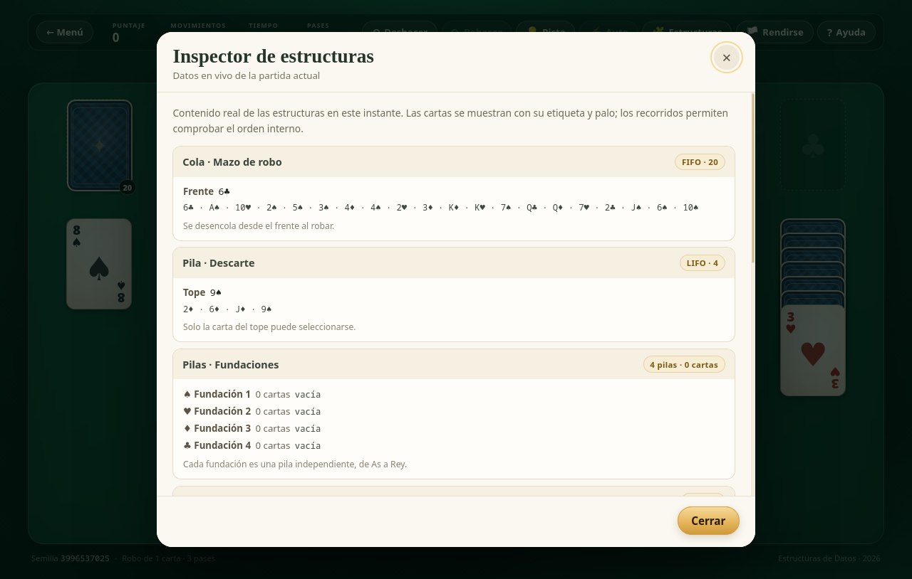
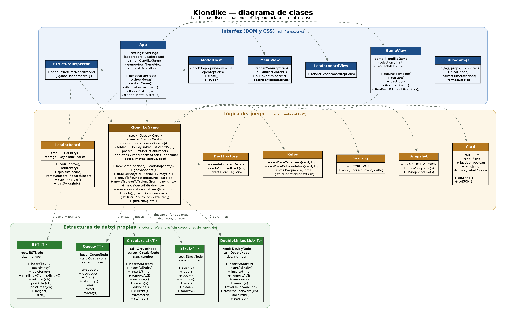

Proyecto final · Estructuras de Datos
Klondike
Manual técnico
Este documento describe cómo está construido el juego por dentro: la arquitectura, las cinco estructuras de datos implementadas desde cero, las decisiones de diseño, las complejidades, las pruebas automatizadas y la forma de ejecutar y sustentar el proyecto. Complementa el manual de usuario, que explica el juego desde el punto de vista del jugador.
Contenido
- Resumen del proyectoObjetivo, alcance y funcionamiento general
- Tecnologías y arquitecturaCapas, dependencias y flujo de datos
- Organización del códigoArchivos, responsabilidades y punto de entrada
- Estructuras de datosDiseño, operaciones, complejidad y uso real
- Lógica del juegoReparto, movimientos, puntaje, deshacer y fin de partida
- Ranking con árbol binario de búsquedaClaves, recorridos, poda y persistencia
- Interfaz gráficaPantallas, eventos, accesibilidad y diseño adaptable
- Pruebas y validaciónSuite automatizada, evidencia y revisión manual
- Cumplimiento de los requisitosTrazabilidad con la consigna de la asignatura
- Ejecución y despliegueServidor local, GitHub Pages y navegadores
- Aportes del equipo y guía de sustentaciónRoles, preguntas frecuentes y demostración
- Conclusiones y trabajo futuroResultados, límites y mejoras posibles
- ReferenciasDocumentación y estándares consultados
- Anexo A. Diagrama de clasesVista completa de las clases y relaciones
Cómo leer este manual
Los nombres de archivos y clases aparecen en monoespaciado. Las tablas de complejidad
usan la notación asintótica habitual: O(1) constante, O(log n)
logarítmica, O(n) lineal y O(n²) cuadrática. La variable n
representa la cantidad de cartas o de entradas del ranking, según el contexto.
1. Resumen del proyecto
Klondike es un solitario clásico para navegador. El jugador debe llevar las 52 cartas a cuatro fundaciones, una por palo, en orden ascendente. El proyecto implementa el juego completo y, sobre todo, demuestra que las cinco estructuras de datos fueron construidas desde cero con nodos y referencias, y que cada una cumple un papel real dentro de la partida.
1.1 Alcance funcional
| Área | Implementación |
|---|---|
| Reglas | Reparto triangular, columnas descendentes alternando colores, fundaciones por palo, reyes en columnas vacías, grupos válidos y reciclaje del descarte. |
| Modalidades | Robo de 1 o 3 cartas; 3, 5 o pases ilimitados. Los ajustes se guardan en el navegador. |
| Partida | Puntaje, movimientos, tiempo, pases, pistas, autocompletado, rendición y condiciones de victoria y derrota. |
| Historial | Deshacer y rehacer cualquier cantidad de movimientos mediante pilas de instantáneas. |
| Ranking | Top 10 local de partidas ganadas, ordenado por puntaje y almacenado con un árbol binario de búsqueda. |
| Interfaz | Menú, tablero, ranking, ajustes, reglas, inspector de estructuras y diseño adaptable a móvil. |
| Calidad | 40 pruebas automatizadas, JSDoc en las capas de lógica y estructuras, y validación manual en navegador. |
1.2 Las cinco estructuras y su papel
| Estructura | Archivo | Uso dentro del juego | Operación característica |
|---|---|---|---|
| Pila | src/structures/Stack.js | Descarte, cuatro fundaciones y pilas de deshacer/rehacer. | push / pop / peek en O(1). |
| Cola | src/structures/Queue.js | Mazo de robo y reparto inicial de las 52 cartas. | enqueue / dequeue en O(1). |
| Lista circular | src/structures/CircularList.js | Control de los pases del mazo y del cursor de pase actual. | advance / current en O(1). |
| Lista doblemente enlazada | src/structures/DoublyLinkedList.js | Las siete columnas del tablero y los grupos que se mueven entre ellas. | splitFrom y recorridos en ambos sentidos. |
| Árbol binario de búsqueda | src/structures/BST.js | Ranking de mejores puntajes; la clave es el puntaje. | insert, search, delete y recorrido inorden. |
1.3 Resultado
El juego funciona de inicio a fin: se puede jugar con ratón o teclado, ganar, perder, deshacer, rehacer, consultar pistas, autocompletar una victoria, guardar el puntaje y revisar en vivo el contenido de las estructuras. La suite automatizada final reporta 40 pruebas aprobadas y 0 fallidas.
2. Tecnologías y arquitectura
2.1 Decisiones tecnológicas
| Decisión | Motivo |
|---|---|
| JavaScript ES2022 con módulos nativos | El navegador carga los módulos directamente; no hay compilación, empaquetado ni dependencias que instalar. |
| HTML5 y CSS3, sin frameworks | La interfaz se construye con DOM y estilos propios. Esto hace visible el trabajo y evita ocultar la lógica detrás de una librería. |
| Sin canvas | Las cartas son elementos HTML accesibles, seleccionables y compatibles con teclado y lectores de pantalla. |
| Sin Base de datos | El ranking y los ajustes se guardan en localStorage; la partida vive en memoria. |
| Semilla aleatoria explícita | El reparto es reproducible: la semilla se muestra en pantalla y permite repetir una partida para probar o demostrar. |
2.2 Capas y dependencias
El código se organiza en cuatro capas con una dirección de dependencia clara: la interfaz conoce el juego, el juego conoce las estructuras, y las estructuras no conocen a nadie. Ninguna estructura importa clases del juego ni del DOM.
2.3 Flujo de una acción
Todas las acciones siguen el mismo recorrido. La vista no decide reglas: solo captura el evento, llama al motor y vuelve a dibujar el estado que el motor devuelve.
- El jugador hace clic, arrastra una carta o presiona una tecla.
GameViewidentifica la zona y la carta, y llama a un método deKlondikeGame.KlondikeGamevalida la jugada conRules, actualiza las estructuras y el puntaje, y registra la instantánea para deshacer.- La vista llama a
refresh(), reconstruye las pilas con el estado actual y actualiza los contadores. - Si la partida terminó, el motor cambia su estado y la aplicación muestra el modal de resultado.
Ventaja de esta separación
La lógica se puede probar sin navegador. Las 40 pruebas crean partidas con semillas y snapshots conocidos, ejecutan movimientos y comparan resultados sin tocar el DOM. La interfaz puede cambiar sin reescribir las reglas, y las reglas pueden cambiar sin tocar la interfaz.
2.4 Estado y persistencia
| Dato | Dónde vive | Duración |
|---|---|---|
| Partida en curso (mazo, descarte, fundaciones, columnas, puntaje, movimientos) | Memoria, dentro de KlondikeGame | Mientras la pestaña permanezca abierta. |
| Historial de deshacer y rehacer | Dos Stack de instantáneas en memoria | Mientras dure la partida. |
| Ajustes (nombre, robo, pases) | localStorage, clave klondike.settings.v1 | Persistente en el navegador. |
| Ranking (top 10) | localStorage, clave klondike.scores.v1 | Persistente en el navegador. |
No se envía información a internet. Si el almacenamiento está lleno o bloqueado, el juego sigue funcionando en memoria y el ranking informa que no pudo guardar.
3. Organización del código
El proyecto tiene 23 módulos de JavaScript, una página HTML y cuatro hojas de estilo, además de las pruebas y la documentación. La separación por carpetas permite ubicar rápido cada responsabilidad.
3.1 Responsabilidades por archivo
| Archivo | Responsabilidad | Líneas |
|---|---|---|
| src/structures/Stack.js | Pila LIFO con nodos enlazados. | 115 |
| src/structures/Queue.js | Cola FIFO con cabeza y cola. | 124 |
| src/structures/CircularList.js | Lista circular simple con cursor. | 334 |
| src/structures/DoublyLinkedList.js | Lista doble con recorridos y splitFrom. | 324 |
| src/structures/BST.js | Árbol binario de búsqueda con recorridos y eliminación. | 278 |
| src/game/KlondikeGame.js | Estado, reglas, movimientos, puntaje, pistas, deshacer y fin de partida. | 955 |
| src/game/Leaderboard.js | Ranking sobre BST y persistencia. | 208 |
| src/game/DeckFactory.js | Baraja ordenada, barajado y registro de cartas. | 57 |
| src/game/Rules.js | Validación de columnas, fundaciones y secuencias. | 74 |
| src/game/Card.js | Modelo de carta, palos, valores y serialización. | 93 |
| src/ui/GameView.js | Tablero, eventos, selección, arrastrar y soltar, teclado. | 1201 |
| src/ui/App.js | Navegación entre pantallas, ajustes, modales y ranking. | 408 |
| src/ui/StructureInspector.js | Vista en vivo de las estructuras. | 133 |
| tests/game.test.js | Pruebas de juego, reglas, ranking, pistas y fin de partida. | 420 |
| tests/structures.test.js | Pruebas de las cinco estructuras. | 205 |
3.2 Punto de entrada
// src/main.js
import { App } from './ui/App.js';
const root = document.getElementById('app');
if (!root) throw new Error('No se encontró el contenedor #app.');
new App(root);
App es el coordinador. Decide qué pantalla mostrar, conserva los ajustes, crea la
partida y conecta los eventos de la vista con el motor. GameView se destruye al salir
de la partida para liberar el temporizador y los escuchadores de teclado; así se evitan fugas y
acciones duplicadas.
3.3 Documentación en el código
Todas las clases y funciones públicas tienen comentarios JSDoc con tipo de parámetros, valor de
retorno y, en las capas de estructuras y lógica, una etiqueta @complexity. En total
hay más de 200 funciones y métodos, y más de 80 anotaciones de complejidad. Esto permite generar
documentación adicional y sustenta las tablas de este manual.
4. Estructuras de datos
Las cinco estructuras están implementadas con nodos y referencias. No se usan arreglos del
lenguaje para simular pilas, colas, listas o árboles, ni se usan las clases Map,
Set o similares para reemplazar su comportamiento. Los arreglos aparecen únicamente
en la interfaz y en las instantáneas, como formato de transporte para dibujar o serializar.
4.0 Resumen de complejidades
| Estructura | Operación | Complejidad | Observación |
|---|---|---|---|
| Pila | push, pop, peek | O(1) | Solo se toca el tope. |
size, isEmpty, clear | O(1) | Contador interno. | |
toArray | O(n) | Recorre de tope a base. | |
search | No implementado | La pila no necesita búsqueda; el juego usa el tope. | |
| Cola | enqueue, dequeue, front | O(1) | Cabeza y cola siempre disponibles. |
size, isEmpty, clear | O(1) | Contador interno. | |
toArray | O(n) | Recorre desde la cabeza. | |
| Lista circular | insertAtStart, insertAtEnd | O(1) | Se conserva la referencia al último nodo. |
advance, current, resetCursor | O(1) | El cursor avanza al siguiente nodo. | |
insertAt, removeAt, remove, search, get | O(n) | Requieren recorrer hasta la posición. | |
traverse, toArray | O(n) | Una vuelta completa a la lista. | |
| Lista doble | insertAtStart, insertAtEnd | O(1) | Referencias a cabeza y cola. |
insertAt, removeAt, remove, search, get | O(n) | Recorrido desde el extremo más cercano. | |
splitFrom | O(n) | Separa la cola desde una posición y reconecta. | |
traverseForward, traverseBackward, toArray | O(n) | Recorridos en ambos sentidos. | |
| BST | insert, search, delete | O(h) promedio O(log n), peor O(n) | h es la altura; el peor caso ocurre con claves ordenadas. |
minEntry, maxEntry | O(h) | Bajan por la izquierda o por la derecha. | |
inOrder, preOrder, postOrder, height | O(n) | Recorren todo el árbol. | |
size, isEmpty, clear | O(1) | Contador interno. |
En el Klondike, n es como máximo 52 cartas; en el ranking, como máximo 10 entradas.
Por eso las complejidades lineales son perfectamente aceptables y el interés está en demostrar el
diseño correcto de cada estructura.
4.1 Pila (Stack)
La pila sigue la disciplina LIFO (last in, first out): el último elemento que entra es el primero que sale. Se implementa con nodos enlazados y un puntero al tope.
Operaciones
| Método | Qué hace | Complejidad |
|---|---|---|
| push(value) | Crea un nodo, lo enlaza al tope anterior y actualiza el tope. | O(1) |
| pop() | Desconecta el nodo del tope, devuelve su valor y reduce el tamaño. | O(1) |
| peek() | Devuelve el valor del tope sin extraerlo. | O(1) |
| isEmpty() / size() | Consulta el estado mediante el contador interno. | O(1) |
| clear() | Descarta la referencia al tope y reinicia el tamaño. | O(1) |
| toArray() | Devuelve los valores del tope a la base. | O(n) |
Uso real en el juego
- Descarte (
waste): cada robo hacepushde la carta; solo elpeekpuede jugarse; al moverla se hacepop. - Fundaciones: hay cuatro pilas independientes. Cada una recibe cartas del mismo palo en orden ascendente; la carta superior es la única visible y jugable.
- Deshacer y rehacer: son dos pilas de instantáneas. Antes de cada acción se hace
pushdel estado en la pila de deshacer y se limpia la de rehacer. Al deshacer se hacepopde la primera ypushen la segunda.
Por qué una pila y no un arreglo
Las tres zonas del juego son naturalmente LIFO: la carta que se roba queda encima del descarte, la última carta puesta en una fundación es la que se puede mover, y la última acción es la primera que se deshace. La pila expresa esa semántica directamente y garantiza O(1) en las operaciones críticas.
4.2 Cola (Queue)
La cola sigue la disciplina FIFO (first in, first out): el primero que entra es el primero que sale. Se implementa con nodos enlazados y dos referencias, cabeza y cola.
Operaciones
| Método | Qué hace | Complejidad |
|---|---|---|
| enqueue(value) | Crea un nodo y lo enlaza después de la cola; actualiza tail. | O(1) |
| dequeue() | Desconecta la cabeza, devuelve su valor y actualiza head. | O(1) |
| front() | Devuelve el valor de la cabeza sin extraerlo. | O(1) |
| isEmpty() / size() | Consulta el estado con el contador. | O(1) |
| clear() | Descarta cabeza y cola. | O(1) |
| toArray() | Devuelve los valores desde la cabeza hasta la cola. | O(n) |
Uso real en el juego
- Mazo de robo (
stock): el reparto y cada robo hacendequeuede la cabeza. El orden del mazo es exactamente el orden en que las cartas fueron encoladas. - Reparto inicial:
createShuffledDeckbaraja la baraja y encola las 52 cartas. Luego el reparto triangular desencola una carta por posición. - Reciclaje: al agotarse el mazo, el descarte se pasa temporalmente a una pila para invertir su orden y se vuelve a encolar en el mazo. Así la primera carta que se robó queda al final y el reciclaje conserva la lógica del solitario.
Por qué una cola
El mazo es una secuencia que se consume siempre por el frente. Una cola con referencias a cabeza y cola permite robar en O(1) sin desplazar elementos, algo que un arreglo haría en O(n) si se eliminara la primera posición.
4.3 Lista circular (CircularList)
La lista circular simple mantiene un puntero al último nodo y hace que tail.next apunte
al primero. Además incluye un cursor que permite recorrerla de forma cíclica sin
perder la posición actual.
Operaciones
| Método | Qué hace | Complejidad |
|---|---|---|
| insertAtStart(value) | Inserta después del último y antes del primero. | O(1) |
| insertAtEnd(value) | Inserta después del último y actualiza tail. | O(1) |
| insertAt(index, value) | Recorre hasta la posición y reconecta. | O(n) |
| removeAt(index) / remove(value) | Busca el nodo, lo desconecta y ajusta tail si era el último. | O(n) |
| search(value) / get(index) | Recorre la lista y devuelve el nodo o valor. | O(n) |
| advance() | Mueve el cursor al siguiente nodo; si está en el último, vuelve al primero. | O(1) |
| current() | Devuelve el valor del cursor. | O(1) |
| setCursor(index) / resetCursor() | Coloca el cursor en una posición o en el primero. | O(n) / O(1) |
| traverse(callback) / toArray() | Recorre una vuelta completa desde el cursor. | O(n) |
Uso real en el juego
La lista circular representa los pases del mazo. Al iniciar la partida se insertan
los números del 1 al límite (3, 5 o más si son ilimitados) y el cursor se coloca en el pase actual.
Cada reciclaje llama a advance(); cuando el cursor vuelve al inicio, el ciclo de pases
se reinicia. El indicador de la barra superior se alimenta de current() y del límite.
Con pases ilimitados, la lista se reconstruye con al menos tres nodos y crece a medida que el
jugador recicla, de modo que el cursor siempre tiene un siguiente. La operación advance
es O(1), que es justamente lo que se necesita en el clic del mazo.
Por qué una lista circular
Los pases son un ciclo: después del último se vuelve al primero. Una lista circular modela ese comportamiento sin condiciones especiales en el recorrido y permite mantener el cursor en O(1). Una lista simple obligaría a reiniciar desde la cabeza en cada vuelta.
4.4 Lista doblemente enlazada (DoublyLinkedList)
Cada nodo guarda una referencia al anterior y al siguiente. La lista mantiene head y
tail, lo que permite insertar y eliminar en los extremos en O(1), recorrer en ambos
sentidos y separar una cola desde una posición.
Operaciones
| Método | Qué hace | Complejidad |
|---|---|---|
| insertAtStart(value) | Inserta antes de la cabeza y actualiza prev. | O(1) |
| insertAtEnd(value) | Inserta después de la cola y actualiza tail. | O(1) |
| insertAt(index, value) | Recorre hasta la posición y reconecta ambos lados. | O(n) |
| removeAt(index) / remove(value) | Desconecta el nodo y une sus vecinos. | O(n) |
| search(value) / get(index) | Recorre desde el extremo más cercano. | O(n) |
| traverseForward(cb) / traverseBackward(cb) | Recorren la lista en un sentido. | O(n) |
| splitFrom(index) | Separa la lista en dos desde la posición indicada y devuelve la segunda. | O(n) |
| size() / isEmpty() / clear() | Consulta o reinicia la lista. | O(1) |
| toArray() | Devuelve los valores de cabeza a cola. | O(n) |
Uso real en el juego
- Siete columnas: cada columna es una lista doble. El reparto inserta al final; la carta superior es el último nodo y se obtiene con
get(size - 1). - Mover grupos: cuando el jugador arrastra una secuencia, el motor localiza la carta inicial, valida la secuencia y usa
splitFrompara separar la cola de la lista. Luego inserta cada carta en la columna destino. - Voltear cartas: al retirar la última carta, se consulta el nuevo último nodo y se marca
faceUp = true. - Interfaz e inspector:
traverseForwarddibuja la columna de arriba a abajo;traverseBackwardpermite mostrar el orden inverso en el inspector y comprobar que los enlacesprevson correctos.
Por qué doblemente enlazada
Las columnas se construyen y se consumen por el final, pero también se recorren hacia atrás para mostrar el estado y para separar grupos. Una lista simple obligaría a recorrer toda la columna para encontrar el nodo anterior al grupo; la lista doble lo hace en O(1) una vez ubicado el nodo.
4.5 Árbol binario de búsqueda (BST)
El árbol guarda una clave numérica y un valor asociado. Para el ranking, la clave es el puntaje y el valor es la información de la partida. Las claves repetidas se insertan en el subárbol derecho para no perder ningún registro.
Operaciones
| Método | Qué hace | Complejidad |
|---|---|---|
| insert(key, value) | Desciende comparando claves; las iguales van a la derecha. | O(h) promedio O(log n), peor O(n) |
| search(key) | Desciende por la rama correspondiente y devuelve el valor. | O(h) promedio O(log n), peor O(n) |
| delete(key) | Cubre hoja, un hijo y dos hijos (reemplazo por el mínimo del subárbol derecho). | O(h) promedio O(log n), peor O(n) |
| minEntry() / maxEntry() | Baja por la izquierda o por la derecha hasta el extremo. | O(h) |
| inOrder(cb) / preOrder(cb) / postOrder(cb) | Recorridos clásicos con callback. | O(n) |
| height() | Calcula la altura máxima del árbol. | O(n) |
| size() / isEmpty() / clear() | Consulta o reinicia el árbol. | O(1) |
Uso real en el juego
Leaderboard encapsula un BST. Al agregar un puntaje, inserta la entrada y poda el
mínimo mientras el tamaño supere 10. Para mostrar el ranking, recorre en inorden (ascendente) y
invierte el resultado, de modo que el mejor puntaje quede primero. qualifies consulta
el mínimo en O(h) para decidir si un puntaje entra al top. La persistencia guarda el inorden en
localStorage y lo vuelve a insertar al cargar.
Por qué un BST
El ranking necesita orden, búsqueda por puntaje y eliminación del mínimo. Un BST ofrece las tres cosas con costo logarítmico promedio y, sobre todo, permite explicar y demostrar los recorridos. Con 10 entradas el costo es mínimo, pero el uso es genuino: no es un adorno, es el almacenamiento real del ranking.
5. Lógica del juego
KlondikeGame es el corazón del proyecto. Mantiene el estado, valida las jugadas,
actualiza las estructuras, calcula el puntaje, registra el historial y decide cuándo termina la
partida. No importa nada del DOM.
5.1 Estado interno
| Campo | Tipo | Contenido |
|---|---|---|
| _stock | Queue<Card> | Cartas que aún no se han robado. |
| _waste | Stack<Card> | Cartas robadas; solo el tope es jugable. |
| _foundations | Stack<Card>[4] | Una pila por palo, de As a Rey. |
| _tableau | DoublyLinkedList<Card>[7] | Las siete columnas. |
| _passes | CircularList<number> | Pases disponibles y cursor actual. |
| _undoStack / _redoStack | Stack<Snapshot> | Historial de estados. |
| _score, _moves, _status | number / string | Puntaje, movimientos y estado (playing, won, lost). |
| _seed, _startedAt, _finishedAt | number | Semilla y tiempos para reproducir y medir la partida. |
5.2 Reparto
newGame crea una baraja ordenada en una lista doble, la baraja con Fisher-Yates
adaptado y encola las 52 cartas. Luego reparte de forma triangular: la columna 0 recibe 1 carta,
la 1 recibe 2, y así hasta la 6 con 7. La última carta de cada columna se marca boca arriba. Las
24 cartas restantes quedan en el mazo.
for (let row = 0; row < 7; row += 1) {
for (let column = row; column < 7; column += 1) {
const card = this._stock.dequeue();
if (card) this._tableau[column].insertAtEnd(card);
}
}
// 1 + 2 + 3 + 4 + 5 + 6 + 7 = 28 cartas repartidas
// 52 - 28 = 24 cartas en el mazo5.3 Robo, reciclaje y pases
- Robo:
draw()desencola hastadrawCountcartas y las apila en el descarte. Si el mazo está vacío,drawOrRecycle()intenta reciclar. - Reciclaje: se vacía el descarte en una pila temporal, se desapila y se encola en el mazo. Esto invierte el orden para que la primera carta robada quede al final del nuevo mazo. Se descuentan 20 puntos y se consume un pase.
- Pases: la lista circular avanza con cada reciclaje. Si el límite es 3 y ya se usaron 3, el reciclaje se rechaza y se comprueba si la partida quedó sin movimientos.
5.4 Movimientos válidos
| Movimiento | Método | Validación |
|---|---|---|
| Descarte → fundación | moveToFoundation({type:'waste'}) | La carta del tope debe ser la siguiente del palo en esa fundación. |
| Columna → fundación | moveToFoundation({type:'tableau', index}) | Igual que el anterior; después se voltea la nueva carta superior. |
| Columna → columna (grupo) | moveTableauToTableau(from, cardId, to) | La secuencia desde cardId debe ser descendente y alternar colores; el destino debe aceptar la primera carta. |
| Descarte → columna | moveWasteToTableau(to) | La carta superior del descarte debe encajar en la columna. |
| Fundación → columna | moveFoundationToTableau(from, to) | La carta superior de la fundación debe encajar; descuenta 15 puntos. |
| Doble clic / autocompletar | autoMoveToFoundation(source) | Busca la fundación correspondiente y mueve si es válido. |
Las funciones de Rules.js concentran las comparaciones: canPlaceOnTableau
exige una unidad menos y color contrario (o un Rey si la columna está vacía);
canPlaceOnFoundation exige el mismo palo y el valor consecutivo;
isValidSequence verifica una secuencia completa antes de mover un grupo.
5.5 Puntaje
| Acción | Puntos |
|---|---|
| Mover una carta a una fundación | +10 |
| Voltear una carta del tablero | +5 |
| Devolver una carta de la fundación al tablero | −15 |
| Reciclar el descarte | −20 |
| Completar la partida | +100 |
applyScore impide que el puntaje baje de cero. Las constantes viven en
Scoring.js y se comparten con la interfaz para mostrar la tabla de reglas.
5.6 Deshacer y rehacer
Antes de cada acción que modifica el estado, el motor llama a #recordUndo(). Este
método captura una instantánea plana, la clona y la apila en _undoStack; además limpia
_redoStack, porque una acción nueva invalida el futuro que se había deshecho.
#recordUndo() {
this._undoStack.push(cloneSnapshot(this.#captureSnapshot()));
this._redoStack.clear();
}
undo() {
if (this._undoStack.isEmpty()) return false;
this._redoStack.push(cloneSnapshot(this.#captureSnapshot()));
this.loadSnapshot(this._undoStack.pop());
return true;
}
La instantánea guarda las cartas como identificadores ("spades-1",
"hearts-12") y las columnas como pares { id, faceUp }. No guarda objetos
Card completos, lo que evita ciclos y mantiene el formato serializable. Al cargar, el
motor reconstruye las pilas, las listas, el mazo, el descarte y los contadores. Un snapshot con
forma inválida se rechaza y el estado actual no cambia.
| Método | Comportamiento | Complejidad |
|---|---|---|
| getSnapshot() | Devuelve una copia plana del estado actual. | O(n) |
| loadSnapshot(s, options) | Valida y reconstruye el estado; opcionalmente reinicia el historial. | O(n) |
| undo() / redo() | Intercambian la instantánea actual con la pila correspondiente. | O(n) |
| canUndo() / canRedo() | Consultas O(1) sobre las pilas. | O(1) |
5.7 Fin de partida
Después de cada acción, #checkStatus() comprueba dos condiciones. La victoria ocurre
cuando las cuatro fundaciones tienen 13 cartas. La derrota ocurre cuando el jugador se rinde o
cuando no hay movimientos posibles: el mazo está vacío, no se puede reciclar (sin pases) y ninguna
carta del descarte o de las columnas puede moverse. En ese caso el estado cambia a
lost y se registra finishedAt.
La rendición es una acción explícita: surrender() guarda el estado en la pila de
deshacer y marca la partida como perdida. Por eso el jugador puede cerrar el modal y deshacer para
continuar; es una decisión de diseño pensada para evitar bloqueos accidentales.
5.8 Pistas y autocompletado
getHint() busca en este orden: una carta que pueda ir a su fundación, un robo
disponible, un reciclaje posible, un movimiento entre columnas y, si nada funciona, devuelve
{ type: 'none' }. La interfaz resalta la carta y el destino con clases CSS.
autoCompleteStep() solo actúa cuando todas las cartas del tablero están boca arriba.
Mueve una carta a su fundación por paso y la interfaz lo llama repetidamente con una animación
corta. Así el jugador ve cómo se completa la victoria en lugar de que el tablero cambie de golpe.
6. Ranking con árbol binario de búsqueda
El ranking conserva hasta 10 puntajes por navegador. La clase Leaderboard es la única
que conoce el BST; la interfaz solo ve una lista ordenada de entradas.
6.1 Clave, valor y duplicados
La clave es el puntaje y el valor es un objeto con nombre, modalidad, tiempo, movimientos y fecha. Si dos partidas terminan con el mismo puntaje, la nueva se inserta a la derecha de la existente. El recorrido inorden devuelve ambas; la poda elimina la menor cuando el árbol supera el límite. Esto evita que un empate borre un registro válido.
6.2 Operaciones del ranking
| Método | Comportamiento | Complejidad |
|---|---|---|
| load() | Lee el arreglo guardado, normaliza cada entrada y la inserta en el BST. | O(n log n) |
| add(data) | Valida, inserta, poda el mínimo si hace falta y guarda. | O(log n) promedio |
| qualifies(score) | Si hay cupo, acepta; si no, compara con el mínimo. | O(log n) promedio |
| remove(score) | Elimina una ocurrencia y guarda. | O(log n) promedio |
| search(score) | Devuelve la entrada con ese puntaje o null. | O(log n) promedio |
| top(limit) | Inorden ascendente, invierte y corta los primeros. | O(n) |
| clear() | Vacía el árbol y el almacenamiento. | O(1) |
| getDebugInfo() | Devuelve los tres recorridos para el inspector. | O(n) |
6.3 Persistencia y errores
El ranking se serializa como un arreglo en inorden. Si el contenido de localStorage
está corrupto, load() limpia el árbol y empieza vacío; si el almacenamiento no está
disponible, save() devuelve false y el juego sigue funcionando en
memoria. La interfaz informa cuando un puntaje no entra al top o cuando no se pudo guardar.
Por qué el ranking usa un BST y no un arreglo ordenado
Un arreglo ordenado también resolvería el problema, pero el BST permite demostrar inserción, búsqueda, eliminación y recorridos con costo logarítmico promedio. Además, el inspector muestra los recorridos inorden, preorden y posorden, lo que convierte al ranking en una herramienta visible para la sustentación.
7. Interfaz gráfica
La interfaz se construye con DOM y CSS propios. No hay canvas ni frameworks: cada carta es un elemento HTML con atributos de datos, lo que facilita los eventos, la accesibilidad y las pruebas.
7.1 Pantallas
| Pantalla | Archivo | Contenido |
|---|---|---|
| Menú | MenuView.js | Jugar, ranking, cómo jugar, ajustes y estructuras; muestra la modalidad y el mejor puntaje. |
| Partida | GameView.js | Barra de estado, mazo, descarte, fundaciones, siete columnas, mensajes y botones de ayuda. |
| Ranking | LeaderboardView.js | Tabla de los 10 mejores, medallas y botón para borrar con confirmación. |
| Modales | Modals.js | Reglas, ajustes, rendición, fin de partida, inspector y confirmaciones. |
| Inspector | StructureInspector.js | Contenido en vivo de las cinco estructuras y recorridos del BST. |
7.2 Eventos del tablero
- Clic: selecciona una carta o ejecuta el movimiento hacia la pila marcada como destino válido.
- Doble clic: envía la carta superior del descarte o de una columna a su fundación si es posible.
- Arrastrar y soltar: usa los eventos nativos
dragstart,dragover,dragleaveydrop. Al arrastrar se marca la selección y se resaltan los destinos válidos. - Teclado:
Droba,Udeshace,Yrehace,Ppide pista,Aautocompleta,Iabre el inspector yEsccancela la selección.Enteractiva una pila enfocada.
7.3 Accesibilidad y responsive
Las pilas tienen tabindex, roles y etiquetas aria-label; las cartas
exponen su palo y valor en texto. Los botones son elementos button reales. El foco se
conserva al abrir y cerrar modales. En pantallas pequeñas el tablero se desplaza horizontalmente
dentro de su contenedor, sin desbordar la página; las columnas reducen su ancho y las cartas
conservan proporción.
7.4 Inspector de estructuras
El inspector es una herramienta de aprendizaje y de sustentación. Muestra el frente de la cola, el
tope del descarte, las cuatro fundaciones, las siete columnas con sus recorridos de ida y vuelta,
el cursor de la lista circular, los recorridos del BST y el tamaño de las pilas de deshacer y
rehacer. Todo se obtiene de getDebugInfo(), sin duplicar estado ni simular datos.

8. Pruebas y validación
8.1 Suite automatizada
Las pruebas se ejecutan en el navegador desde http://localhost:8000/tests/. El
runner es propio: registra cada prueba, la ejecuta en orden, captura errores y muestra un resumen
con la cantidad de aprobadas, fallidas y el total. No usa Jest, Mocha ni ninguna dependencia.
| Bloque | Pruebas | Qué cubre |
|---|---|---|
| Pila | 3 | Apilar, desapilar, LIFO, clear y toArray. |
| Cola | 3 | Encolar, desencolar, FIFO, frente y clear. |
| Lista doble | 5 | Inserciones, recorridos, búsqueda, eliminación, splitFrom y errores de rango. |
| Lista circular | 3 | Inserción, recorrido, búsqueda, cursor y vueltas completas. |
| BST | 4 | Inserción, búsqueda, recorridos, mínimo/máximo, altura, eliminación de hoja/uno/dos hijos y duplicados. |
| Juego y reglas | 15 | Reparto, robo, reciclaje, pases, movimientos, grupos, reyes, deshacer, autocompletar, victoria, derrota y reglas. |
| Ranking | 2 | Inserción, orden, búsqueda, eliminación, poda y qualifies. |
| Pistas y fin de partida | 5 | Pistas de fundación/robo/reciclaje/ninguna, fundación a columna, rendición con deshacer, pases infinitos y snapshot inválido. |

docs/img/10-pruebas.png.
8.2 Cómo ejecutar las pruebas
- Iniciar el servidor local con
python3 -m http.server 8000desde la raíz del proyecto. - Abrir
http://localhost:8000/tests/en el navegador. - Verificar el resumen verde: 40 pruebas aprobadas · 0 fallidas · 40 total.
- Si se modifica un módulo, recargar con
Ctrl+F5o reiniciar el navegador; los módulos ES se cachean con fuerza.
8.3 Validación manual en navegador
| Escenario | Resultado esperado | Estado |
|---|---|---|
| Robo de 1 y de 3 cartas | El descarte recibe la cantidad correcta y el contador de movimientos aumenta. | ✓ |
| Selección de carta | Borde dorado y destinos válidos resaltados. | ✓ |
| Arrastrar y soltar | El grupo se mueve solo a destinos válidos; los inválidos no aceptan el drop. | ✓ |
| Doble clic a fundación | La carta sube si es la siguiente del palo. | ✓ |
| Pistas | Resalta carta y destino; avisa cuando no hay movimientos. | ✓ |
| Deshacer y rehacer | El estado, el puntaje y los contadores vuelven al punto anterior. | ✓ |
| Rendición | Marca derrota, muestra el modal y permite deshacer al cerrarlo. | ✓ |
| Ajustes | Se guardan y se aplican a la siguiente partida. | ✓ |
| Ranking | Guarda, ordena, muestra y borra con confirmación. | ✓ |
| Inspector | Refleja el estado real de las estructuras. | ✓ |
| Teclado | D, U, Y, P, I, Esc y Enter funcionan. | ✓ |
| Móvil | Sin desbordamiento horizontal; el tablero se desplaza dentro de su contenedor. | ✓ |
| Consola | Sin errores ni promesas rechazadas durante los recorridos. | ✓ |
9. Cumplimiento de los requisitos
La siguiente tabla relaciona cada exigencia de la consigna con la implementación y la evidencia disponible en el repositorio.
| Requisito | Cómo se cumple | Evidencia |
|---|---|---|
| Juego completo de inicio a fin | Klondike con reparto, movimientos, pases, puntaje, victoria, derrota, reinicio y ranking. | Juego en /; pruebas 19 a 40. |
| Cinco estructuras propias | Pila, cola, lista circular, lista doble y BST con nodos y referencias. | src/structures/; pruebas 1 a 18; inspector. |
| Cada estructura cumple un papel real | Descarte/fundaciones/deshacer, mazo, pases, columnas y ranking. | Sección 4; KlondikeGame.js; Leaderboard.js. |
| Interfaz gráfica | Menú, tablero, ranking, ajustes, modales, inspector y diseño adaptable. | Capturas del manual de usuario; src/ui/. |
| Reglas y validación de jugadas | Rules.js y métodos canMove*; mensajes de error sin bloquear la partida. |
Pruebas 24 a 28 y 33. |
| Robo de 1 y 3; pases 3, 5 e ilimitados | Ajustes persistentes y CircularList para el ciclo de pases. |
src/config.js; pruebas 20 a 23 y 39. |
| Victoria y derrota | Fundaciones completas; sin movimientos ni pases; rendición. | Pruebas 31, 32 y 38; modal de fin de partida. |
| Manual de usuario | Documento en español con reglas, controles, capturas y preguntas frecuentes. | docs/Manual_Usuario_Klondike.pdf. |
| Manual técnico | Este documento: arquitectura, estructuras, complejidad, pruebas y sustentación. | docs/Manual_Tecnico_Klondike.pdf. |
| Diagrama de clases | Diagrama UML generado con Graphviz, con atributos, métodos y relaciones. | docs/diagrama-clases.png y .svg; Anexo A. |
| Pruebas y evidencia | Suite propia de 40 pruebas y validación manual documentada. | /tests/; Figura 2; sección 8.3. |
| Repositorio con aportes del equipo | Git con rama main, commits de ambos integrantes y documento de aportes. |
Historial de GitHub; sección 11. |
Sobre el uso de estructuras
La consigna permite usar las estructuras de otra forma si se justifica. En este proyecto se eligió la asignación más natural para el solitario: pila para lo que se apila, cola para lo que se consume en orden, lista circular para el ciclo de pases, lista doble para columnas que se recorren en ambos sentidos y BST para un ranking ordenado. Cada elección se explica en la sección 4.
10. Ejecución y despliegue
10.1 Servidor local
El proyecto usa módulos ES, por lo que debe abrirse por HTTP. Con Python 3 instalado:
cd ProyectoFinal
python3 -m http.server 8000
Luego abrir http://localhost:8000 para jugar y
http://localhost:8000/tests/ para las pruebas.
10.2 Alternativas
| Opción | Pasos |
|---|---|
| Live Server (VS Code) | Abrir la carpeta, clic derecho en index.html y elegir Open with Live Server. |
| GitHub Pages | Publicar la rama main desde la configuración del repositorio; la página queda disponible en la URL del proyecto. |
| Servidor propio | Cualquier servidor estático que respete las rutas relativas y los tipos MIME de .js como text/javascript. |
10.3 Compatibilidad
El juego se probó en Firefox 160 en Linux. Usa características estándar de ES2022 (campos privados
de clase, módulos, Object.freeze, structuredClone no requerido) y
localStorage. Debe funcionar en Chrome, Edge y Safari recientes. No requiere conexión
a internet una vez cargado.
10.4 Estructura de la entrega
| Elemento | Ubicación |
|---|---|
| Código del juego | index.html, src/, styles/ |
| Pruebas | tests/ |
| Manual de usuario | docs/Manual_Usuario_Klondike.pdf y su fuente HTML |
| Manual técnico | docs/Manual_Tecnico_Klondike.pdf y su fuente HTML |
| Diagrama de clases | docs/diagrama-clases.svg, .png, .dot |
| Evidencia de pruebas | docs/img/10-pruebas.png |
| Presentación del repositorio | README.md |
11. Aportes del equipo y guía de sustentación
11.1 Roles
| Integrante | Aportes |
|---|---|
| Miguel Angel Vergara Morales | Diseño de la arquitectura, implementación de las cinco estructuras, motor de juego, interfaz, pruebas base, diagrama de clases y documentación técnica. |
| Danney Yuliana Medina Males | Pruebas de refuerzo de las estructuras, revisión funcional del manual de usuario y preparación de la demostración. Los detalles y comandos de su aporte están en el historial de commits del repositorio. |
11.2 Qué debe poder explicar cada integrante
- Por qué cada estructura se usa en esa zona del juego y qué pasaría si se reemplazara por un arreglo.
- La diferencia entre LIFO y FIFO, y un ejemplo concreto dentro del juego.
- Cómo funciona el cursor de la lista circular y qué ocurre cuando se agotan los pases.
- Cómo se mueve un grupo entre columnas y por qué se usa
splitFrom. - Cómo se inserta, busca y elimina en el BST, y cómo se obtiene el top 10 con el recorrido inorden.
- Cómo se guarda una instantánea y por qué el deshacer no necesita revertir cada movimiento a mano.
- Cómo se detecta la victoria y la derrota, y qué pasa al rendirse.
- Cómo se ejecutan las pruebas y qué significa cada bloque de la tabla 8.1.
11.3 Guion de demostración (10 minutos)
- Menú (1 min): mostrar modalidad, mejor puntaje y ajustes. Cambiar a robo de 3 y 5 pases.
- Partida (3 min): robar, seleccionar, mover a fundación, mover un grupo, usar pista y deshacer/rehacer.
- Inspector (2 min): abrir estructuras y señalar la cola del mazo, la pila del descarte, una columna con recorrido de ida y vuelta, el cursor de pases y los recorridos del BST.
- Ranking (1 min): mostrar el top, explicar la clave y la poda, y borrar con confirmación.
- Pruebas (2 min): abrir
/tests/, mostrar el resumen 40/40 y explicar dos pruebas:splitFromy derrota sin movimientos. - Cierre (1 min): repasar la tabla de complejidades y las limitaciones.
11.4 Preguntas frecuentes de sustentación
¿Por qué no usaron arreglos para las pilas y colas?
Porque el objetivo de la asignatura es implementar las estructuras desde cero. Además, las operaciones de la pila y la cola quedan en O(1) sin desplazamientos, y el código muestra explícitamente los nodos y las referencias.
¿Dónde se usa realmente la lista circular?
En KlondikeGame.#buildPasses() y en recycle(). La lista contiene los
pases 1..límite; el cursor marca el pase actual y advance() lo mueve en O(1) al
reciclar. El inspector muestra el cursor en vivo.
¿Qué pasa si el jugador pierde y luego deshace?
La rendición y la derrota guardan una instantánea antes de cambiar el estado. Al deshacer se
restaura el estado playing, el puntaje y los contadores; por eso el modal de derrota
se puede cerrar y continuar.
¿Cómo se evita que un puntaje repetido borre otro?
Las claves iguales se insertan a la derecha. El recorrido inorden las devuelve todas y la poda elimina el mínimo, no una clave arbitraria. Así los empates se conservan hasta que el límite de 10 los desplace.
¿Por qué el juego no guarda la partida en curso?
Para mantener el alcance controlado y evitar estados corruptos entre versiones. Sí se guardan los ajustes y el ranking, que son los datos que el jugador espera conservar. La partida se puede reiniciar con la misma semilla si se necesita reproducir.
12. Conclusiones y trabajo futuro
12.1 Resultados
- El juego está completo y es jugable de principio a fin, con reglas, puntaje, ayuda y ranking.
- Las cinco estructuras están implementadas con nodos y referencias, y cada una tiene un uso verificable en el juego.
- La separación entre lógica e interfaz permitió probar el motor sin DOM y mantener la vista simple.
- Las 40 pruebas automatizadas y la validación manual cubren los caminos críticos y los errores previsibles.
- La documentación incluye manual de usuario, manual técnico, diagrama de clases y evidencia de pruebas.
12.2 Limitaciones
- La partida en curso no se persiste; al recargar la página se pierde.
- El ranking es local y no se sincroniza entre navegadores o dispositivos.
- El autocompletado solo se habilita cuando no quedan cartas boca abajo, para no revelar información.
- El diseño está optimizado para ratón y teclado; el arrastre táctil depende del navegador.
12.3 Mejoras posibles
- Guardar la partida en curso y ofrecer “continuar” desde el menú.
- Añadir animaciones de reparto y de movimiento de cartas.
- Incluir estadísticas históricas por modalidad y gráficos de progreso.
- Permitir varios perfiles locales y un ranking por modalidad.
- Internacionalizar la interfaz y los manuales.
12.4 Aprendizajes
El proyecto permitió comprobar que una estructura de datos no es un ejercicio aislado: cada decisión (una pila para el descarte, una cola para el mazo, un cursor circular para los pases, una lista doble para las columnas y un BST para el ranking) simplifica el código y hace explícita la semántica del juego. También mostró la importancia de separar la lógica de la interfaz y de escribir pruebas con estados controlados.
13. Referencias
- MDN Web Docs. JavaScript — Modules, Classes, Private class fields, Drag and drop API.
- MDN Web Docs. Web Storage API (
localStorage). - Documentación de JSDoc. Anotaciones
@param,@returnsy etiquetas personalizadas. - Graphviz. DOT Language y dot command-line tool.
- Poppler. pdftoppm, pdfinfo y pdftotext para la revisión de los PDF.
- Consigna del proyecto final de Estructuras de Datos, noviembre de 2026.
Herramientas utilizadas
| Herramienta | Uso |
|---|---|
| Firefox 160 | Ejecución del juego, pruebas y generación de PDF con WebDriver:Print. |
| Python 3 | Servidor HTTP local, cliente Marionette y scripts de captura. |
Graphviz dot | Generación del diagrama de clases en SVG y PNG. |
| Poppler | Conversión de páginas PDF a imágenes para revisión visual. |
| Git y GitHub | Control de versiones, repositorio remoto y publicación. |
| VS Code | Edición, servidor Live Server y gestión del repositorio. |
Anexo A. Diagrama de clases
El diagrama muestra las cinco estructuras, la lógica del juego y la interfaz. Las flechas
discontinuas indican dependencia o uso; los clusters agrupan las capas. La versión vectorial
(docs/diagrama-clases.svg) se puede ampliar sin pérdida. En el PDF, la página final
reproduce el diagrama en tamaño A3 horizontal para facilitar su lectura.

Cómo regenerar el diagrama
cd docs
dot -Tsvg diagrama-clases.dot -o diagrama-clases.svg
dot -Tpng -Gdpi=150 diagrama-clases.dot -o diagrama-clases.png
El archivo diagrama-clases.dot es la fuente editable. Si se agrega una clase o un
método, se actualiza el .dot y se vuelven a generar las imágenes.